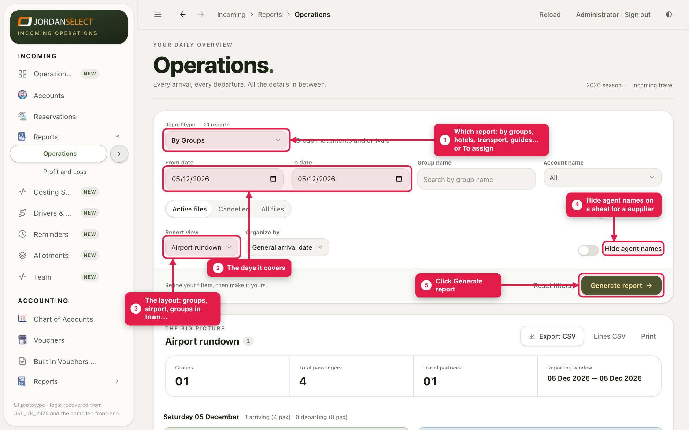
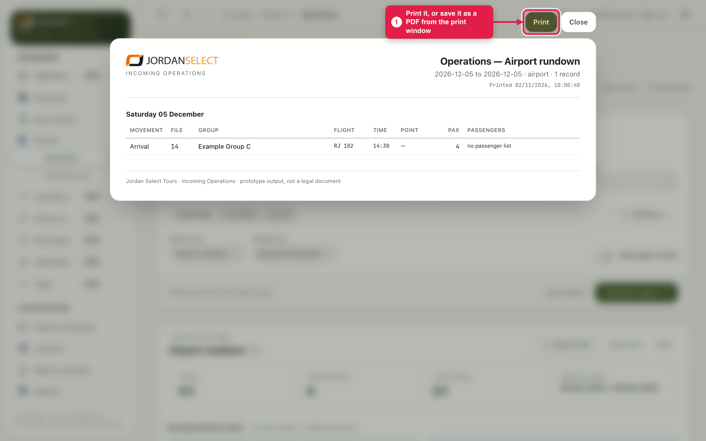
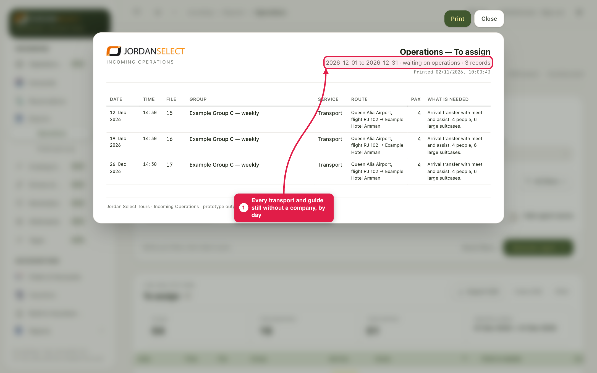

Print the day’s movements for the desk, a list for a supplier, or everything still waiting for a company.
WhoOperations
WhereIncoming → Reports → Operations
Takes1 minute per report
You needThe days the report should cover
How it works
One screen holds all 21 operations reports. Choose the report and the days, then Generate report. It opens as a sheet you can print or save as a PDF. Export CSV gives the same rows for Excel.
Examples in this guide: the airport run down for 5 December, and To assign for the whole of December.
1. Choose the report
1
Open Reports → Operations. Pick the Report type: by groups, agents, hotels, transport, guides, restaurants… or To assign.
2
Set From date and To date. Narrow by group name or agent if you need to.
3
For the groups reports, pick the Report view: groups run down, airport run down, groups in town, monthly or statistical.
4
Sending it to a supplier? Turn on Hide agent names. Then click Generate report.

The filters. Organize by chooses which date counts: arrival, departure or issue.
2. Print it
5
The report opens as a sheet. Click Print, and in the print window choose your printer or Save as PDF. Close takes you back to the filters.

The airport run down for 5 December: who lands, when, on which flight, how many.
3. To assign
6
Choose To assign as the report type to list every transport and guide line still without a company or guide, by day, with what Sales asked for.

December’s To assign list. File 14’s transfer is not on it any more (guide 2).
Every morningRun To assign for the next two weeks. An empty list means every transfer and guide is booked.
Questions? Ask the operations manager. · Last checked: ____ · Screens shown are from a test copy of the CRM with made-up data.